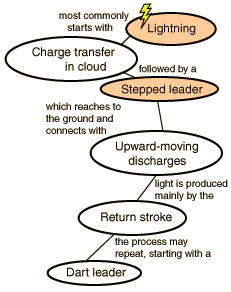

The Stepped Leader
Following a charge transfer
event in the lower part of the cloud,
the released electrons proceed to the
ground. Uman "The vehicle by which these electrons move from the cloud to the ground is called a stepped leader... it moves to the ground in rapid, luminous steps that are about fifty yards long. Each step occurs in less than one-millionth of a second, and the time between each step is about one fifty-millionth of a second. The stepped leader, moving at a velocity of about 200 miles per hour, takes about one-hundredth of a second to travel from the cloud to earth."
" Measured
photographically, the stepped leader is between one and ten yards in diameter. It is thought, however, that most of the current flows down a narrow conducting core that is less than one inch in diameter, and that the large, photographically obvserved diameter is due to a luminous electrical corona surrounding the conducting core."
|

|